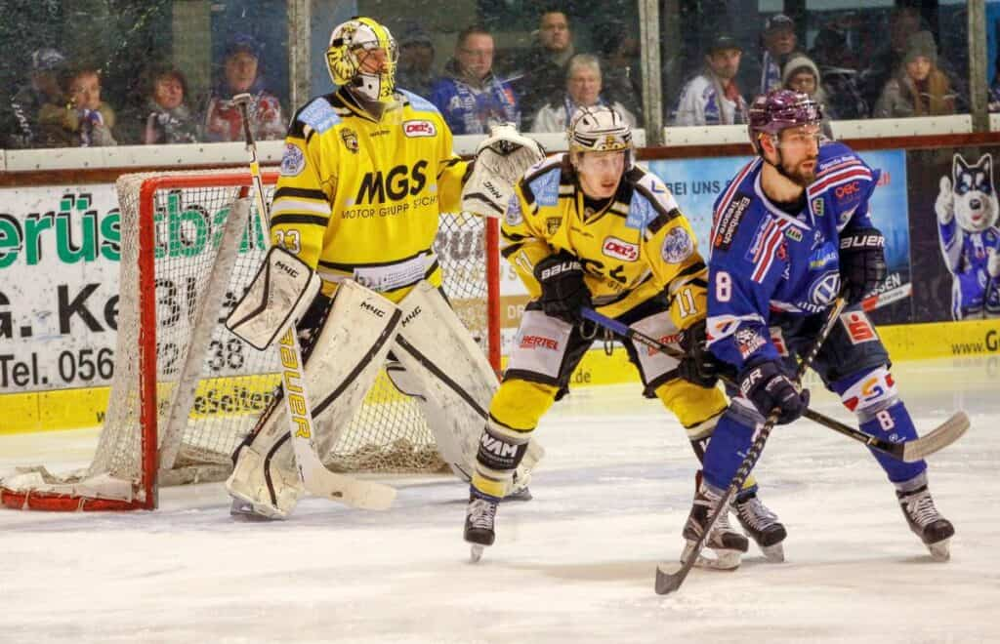

home
about
quiz
Hockey postions
Goalies
The first and most importnat postion is the goal tender. They are in
charge of blocking the puck from going in the net and stopping rebouds.
They are the only positon with their own special equipment other than the
ref and is arguably the hardest postion to play in the game.
Learn more...
Defence

A defenseman supports the goalie and blocks shots on goal in the defensive
zone. Defensemen also play an offensive role when their team has the puck
in the offensive zone. They will be positioned either towards the top of
the zone near the blue line, called the point.
Learn more..
Center
The center is the central attacker in hockey. They are usually the scorer.
The center can move more freely than the wingers and plays the entire ice.
They take faceoffs after every whistle and are generally the faster
skaters on the team.
Learn more...
Wingers
The hockey wing has responsibilities up and down the ice. On defense, the
winger's job is all about puck possession as well as shutting down the
opposition's defenseman on that side of the ice. In the offensive zone, a
winger will stay on their desegnated side and moved between the boards and
infront of the net.
Learn more...
Refs
In hockey, an ref is a person who has some responsibility for enforcing
the rules and maintaining the order of the game. Theres 4 refs on the ice
at one time and only 2 of them are actually referees. The other 2 people
are called linesmen and are there to call off sides as well as support
their refs.
Learn more...